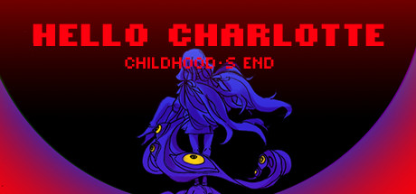
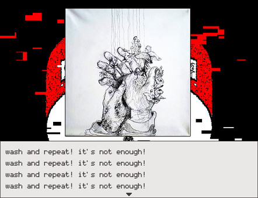
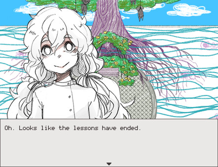

Купить Hello Charlotte EP3: Childhood's End!
Инфо

Особенности игры и Геймплей
Геймплей игры представляет из себя смесь элементов визуальной новеллы, бродилок и головоломок.
- Решайте головоломки!
- Исследуйте Дом!
- Получите все достижения!
- Соберите все коллекционные карточки!
- Обнаружьте новые книги!
- Говорите с жильцами Дома и Вашими любимыми одноклассниками!
- Испытайте концовку истории Шарлотты и раскройте всю правду!


ОПИСАНИЕ КОНТЕНТА ДЛЯ ВЗРОСЛЫХ
Разработчики описывают контент так:
Graphic violence and death, suicide, self-harm, cursing, body horror.